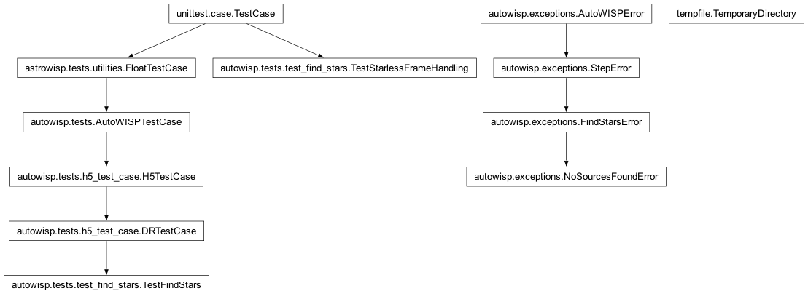
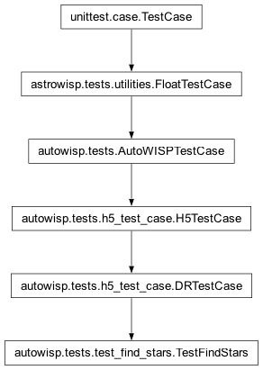
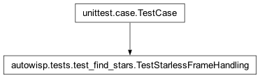

autowisp.tests.test_find_stars module
Class Inheritance Diagram

Unit tests for the find_stars step.
- class autowisp.tests.test_find_stars.TestFindStars(methodName='runTest')[source]
Bases:
DRTestCase
Tests of the find_stars step.
- class autowisp.tests.test_find_stars.TestStarlessFrameHandling(methodName='runTest')[source]
Bases:
TestCase
A starless frame must fail on its own, not take the batch down.
A frame that is clouded over or badly defocused yields no extracted sources. That is a property of the frame, not a pipeline fault, so
find_stars_singlerecords it as a failed frame and returns; every other find_stars failure still propagates and stops the run.- _mark_end(input_fname, status=1, **kwargs)[source]
Stand-in for the manager’s progress-end callback.
- _run_with_extractor(tmp, extractor)[source]
Run
find_stars_singleon a throwaway frame withextractor.